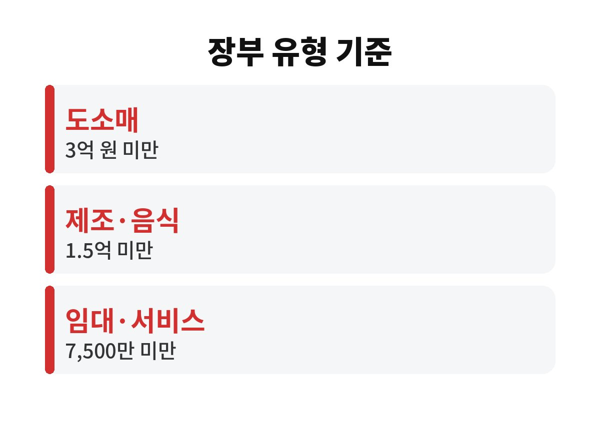
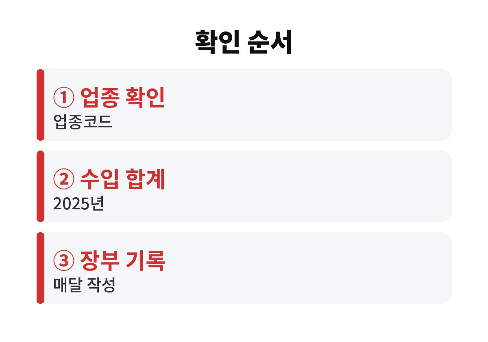

간편장부 복식부기 차이는 장부를 쓰는 방식보다 직전 연도 수입금액이 업종별 기준선을 넘었는지로 먼저 갈립니다.
2026년 기준으로 1인 사업자가 종합소득세 신고 전에 확인할 장부 유형과 장부를 쓰지 않았을 때 붙는 가산세를 정리했습니다.
내년 5월에 급하게 정하기보다 지금부터 기록을 쌓아 두는 쪽이 훨씬 수월합니다.
이름 때문에 가볍게 넘겨도 된다고 생각하기 쉽습니다.
그러나 간편장부대상자가 장부 없이 신고하면 무기장으로 보아 산출세액의 20%가 가산세로 붙을 수 있습니다.
신규 사업자 등 일부 소규모 사업자는 가산세 대상에서 빠지므로 본인이 해당하는지는 세무서에서 확인해야 합니다.
복식부기의무자가 간편장부로 신고하면 장부를 쓰지 않은 것과 비슷하게 취급될 수 있습니다.
의사나 변호사 같은 전문직 사업자는 수입이 적어도 복식부기의무자입니다.
2026년 귀속 종합소득세는 2025년 수입금액을 기준으로 장부 유형을 가립니다.
올해 매출이 크게 늘어도 이번 신고 유형은 그대로이고, 늘어난 금액은 다음 해 판정에 반영됩니다.
전문직이 아닌 신규 사업자는 간편장부대상자로 봅니다.
| 업종 | 간편장부대상자 | 복식부기의무자 |
|---|---|---|
| 도소매업·농업·임업·어업·광업·부동산매매업 | 직전 연도 3억 원 미만 | 3억 원 이상 |
| 제조업·숙박·음식점·건설·운수·정보통신업 등 | 1억5천만 원 미만 | 1억5천만 원 이상 |
| 부동산임대·서비스업(교육·보건 등) | 7천500만 원 미만 | 7천500만 원 이상 |

온라인 도소매업을 하는 사업자의 2025년 수입금액이 3억 원에 못 미치면 간편장부대상자입니다.
업종을 함께 운영하는 경우에는 업종별 수입금액을 합산해 판정하는 규정이 따로 있어 세무서 확인이 필요합니다.
표의 금액은 비용을 빼기 전 수입금액이며 순이익과는 다릅니다.

예를 들어 택배 박스를 샀다면 그날 날짜, 거래처, 금액, 증빙 종류를 한 줄로 적어 둡니다.
나중에 한꺼번에 채우려 하면 영수증이 뒤섞여 시간이 몇 배로 듭니다.
어느 쪽이 낫다고 단정하기는 어렵고, 거래 건수와 기록에 쓸 수 있는 시간이 판단 기준이 됩니다.
엑셀형 서식에 직접 입력해도 부담이 크지 않아 간편장부로 시작해도 무리가 없습니다.
다만 매입 영수증을 모아 두지 않으면 장부가 있어도 비용으로 인정받지 못할 수 있으니, 기록과 증빙 보관을 한 묶음으로 움직이는 편이 낫습니다.
장부 없이 신고하면 단순경비율이나 기준경비율로 소득을 추계하게 됩니다.
이 경우 실제 지출보다 인정되는 경비가 적어 세금이 늘 수 있고, 결손이 나도 다음 해로 넘겨 공제받기 어렵습니다.
주문 한 건씩 입력하다 보면 몇 달 만에 기록이 밀리기 쉽습니다.
간편장부대상자가 복식부기로 장부를 써서 신고하면 산출세액의 20%, 한도 100만 원의 기장세액공제를 받을 수 있습니다.
다만 회계 프로그램 이용료와 비교해 실익이 있는지는 따져 보아야 합니다.
이번 주에 2025년 수입금액 합계와 사업자등록증의 업종부터 확인해 보시기 바랍니다.
장부 유형이 애매하면 신고 시기가 몰리기 전에 세무서나 세무사에게 먼저 묻는 편이 낫습니다.
5월 신고철에는 문의가 몰려 답을 받기까지 시간이 걸리는 경우가 많습니다.
※ 본 글은 2026년 기준 공개 자료를 바탕으로 정리한 정보이며, 세금·금융 상품 선택은 본인 상황에 맞게 전문가와 확인하시길 바랍니다.